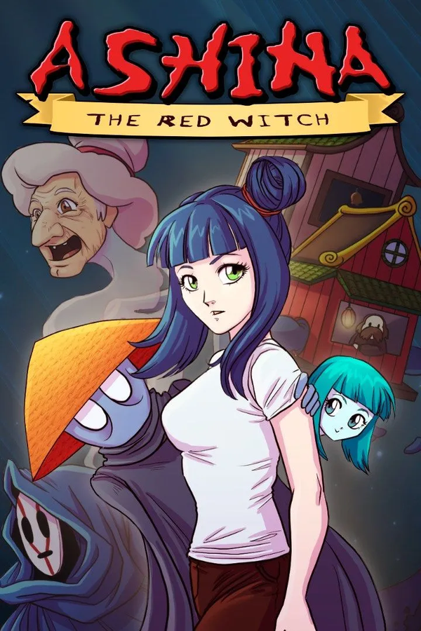

Ashina: The Red Witch
Ashina: The Red Witch
Details
|  | |
| Playtime | Not Played |
| Last Activity | Never |
| Added | 5/06/2025 3:25:10 |
| Modified | 7/06/2025 20:54:19 |
| Completion Status | Not Played |
| Library | Steam |
| Source | Steam |
| Platform | PC (Windows) |
| Release Date | |
| Community Score | |
| Critic Score | |
| User Score | |
| Genre | Adventure Casual Indie |
| Developer | |
| Publisher | |
| Feature | Achievements Family Sharing Full Controller Support Single-Player |
| Links | Community Hub Discussions Guides News Store Page PCGamingWiki Achievements |
| Tag | 2D Adventure Anime Atmospheric Casual Choices Matter Conversation Dark Exploration Funny Interactive Fiction Multiple Endings Narration Pixel Graphics Puzzle Retro Story Rich Surreal Top-Down Walking Simulator |
Description

Ashina: The Red Witch is an exploration-based, story-adventure game. Use items to solve puzzles as well as talk to many other characters to help dig into the story even further!

Join Ash on the journey of an afterlife-time! Travel through a mysterious spirit world filled with strange creatures, interesting characters, and memorable moments! Ash must find her way back home and save her sister from the powers that be.

- A unique and (hopefully) thrilling story!
- New and exciting characters, as well as some returning characters from 'My Big Sister'.
- Adventure-like puzzles.
- Character dialogue options to delve into the lore surrounding the universe.
- An Original Soundtrack.
- Achievements + Trophies!
My stories are made for the fans and players, and I would love to continue sharing them with everyone!